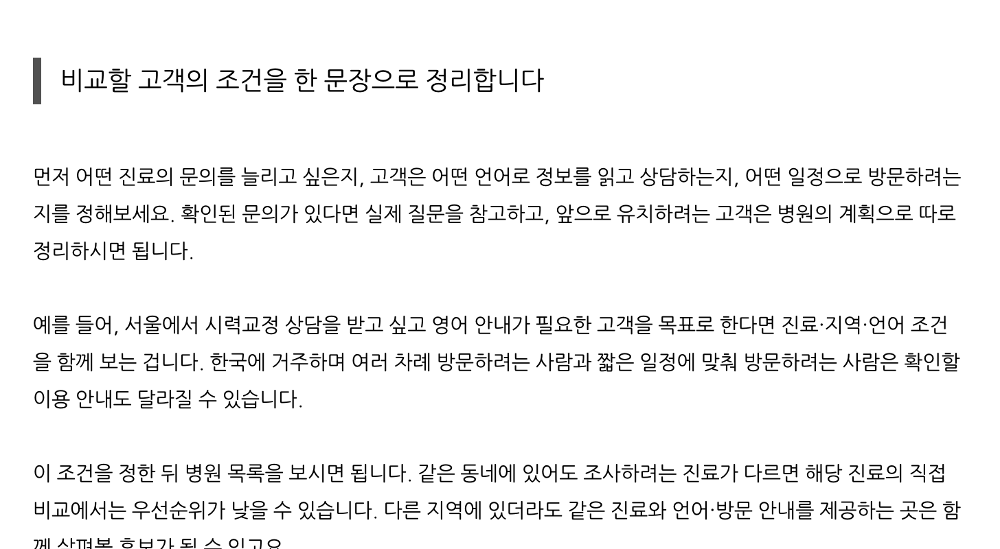
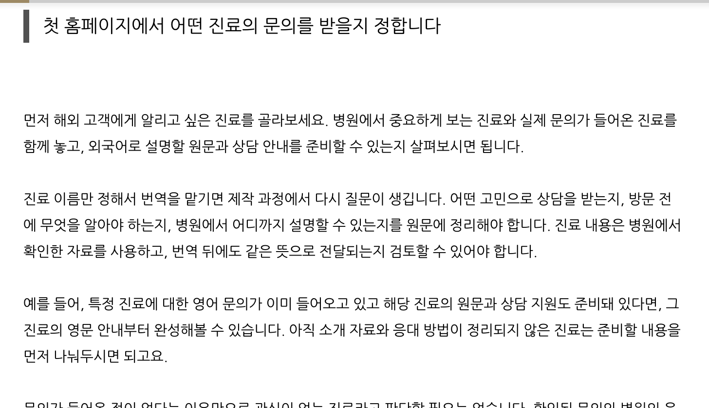
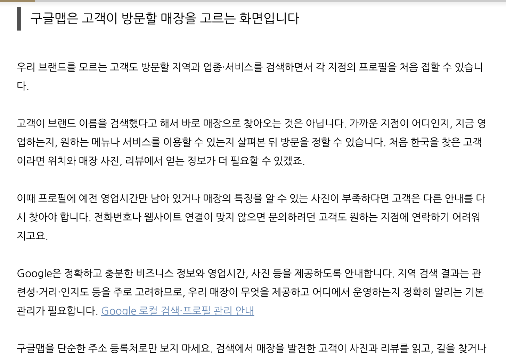
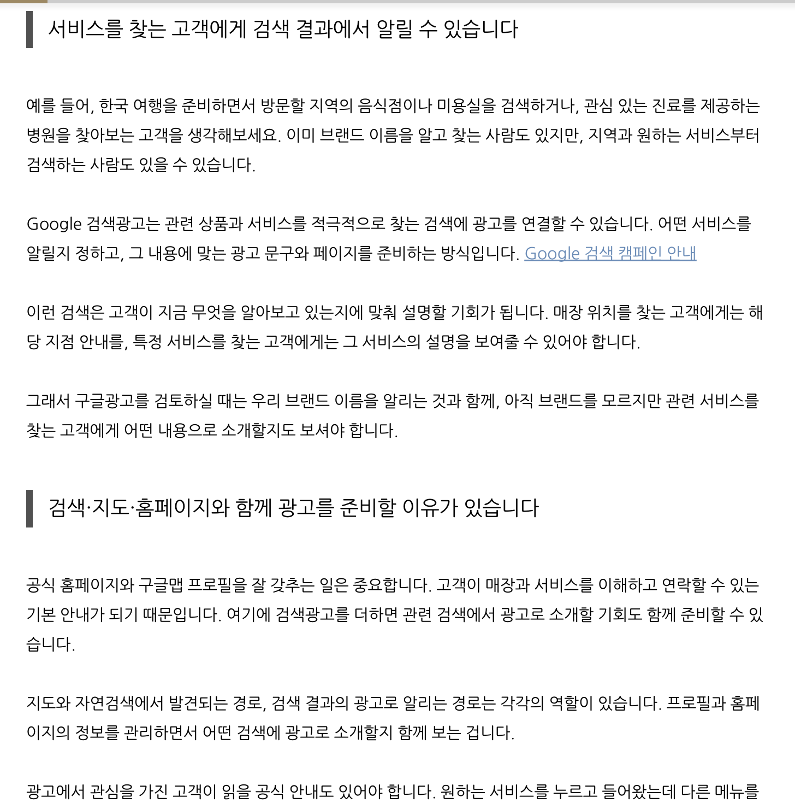
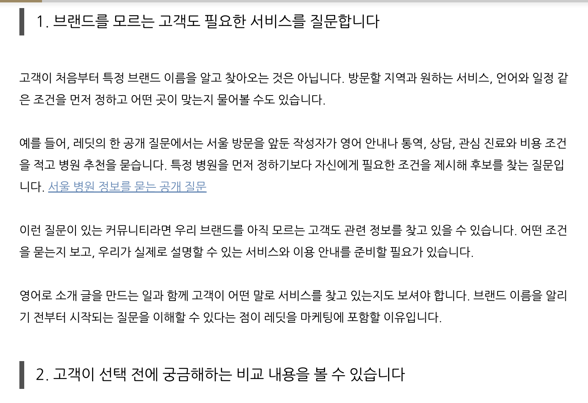

N02 · 발행글 · 소제목 인용구 4개
병원 외국인 마케팅 경쟁분석, 어떤 병원과 비교해야 할까요?
인용구와 본문 단락 간격을 정리한 실제 저장 화면
BLINK AD · NAVER PREMIUM · 2026.10.28
소제목 20개를 세로선 인용구로 표시하고, 기존 본문 문단 사이의 여백을 정리했습니다.
예약글 미리보기는 운영 계정 로그인이 필요할 수 있습니다.

인용구와 본문 단락 간격을 정리한 실제 저장 화면

인용구와 본문 단락 간격을 정리한 실제 저장 화면

인용구와 본문 단락 간격을 정리한 실제 저장 화면

